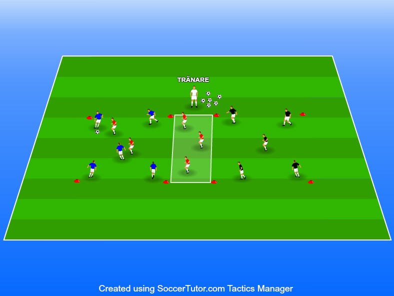

Att spelarna uppfattar hur man spelar sig ur situationer samtidigt som man tränar på ett aggressivt och strukturerat presspel. Spelarna ska lära sig att uppfatta sin omgivning och fördela bollen snabbt och med rätt adress.
9-18 spelare.
1 boll i spel hela tiden hamnar
Genom denna övning vill vi att spelarna spelar på små ytor som är med. Rekommendationen för ett optimalt tempo är och med så få touch som möjligt. däremot 12-15 personer vilket
Är ni många på träning går det även att nivåindela på denna övning blir 4-5 per respektive lag. annars fördela jämnt så att alla får träna på både presspelet och • 1 boll i spel hela tiden hamnar den utanför spelplan sätter passningar. Är ni inte ett jämnt antal spelare så kan ni tränaren igång en ny nivåindela på ett sätt så att det blir jämnt.
Övningen börjar med att tränaren sätter in en pass i någon av kvadraterna
När laget i respektive kvadrat nuddar bollen får två stycken från laget i mitten lov att springa in och försöka att bryta bollen. Lyckas inte lagets spelare att bryta passningen och spela bollen ur kvadraten, får spelande lag lov att slå över bollen till nästa kvadrat efter x antal passningar i rad.
Då ska laget i den kvadraten försöka att slå x antal passningar i rad utan att motståndarna bryter passningarna och får bollen ur kvadraten. Laget i mitten skickar då in två nya spelare för att försöka bryta deras passningar. Bryter det jagande laget passningen så att bollen åker ur kvadraten, sätter tränaren in en ny boll i den andra kvadraten och det laget som misslyckades med sina passningar får bli laget i mitten tills de lyckats bryta bollen.
Misslyckas det spelande laget med passen över trots man lyckats med x passningar i rad, så får man ändå bli det jagande laget i mitten.
Genom denna övning vill vi att spelarna spelar på små ytor och med så få touch som möjligt.